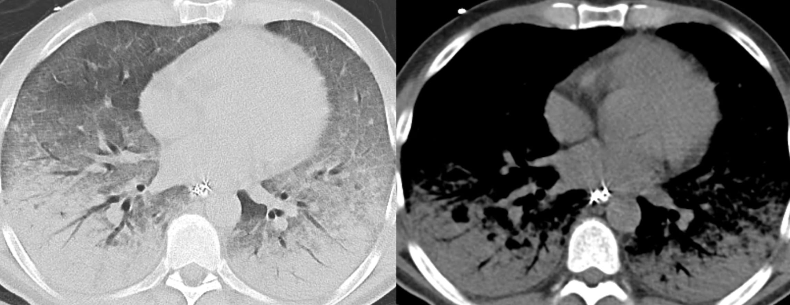
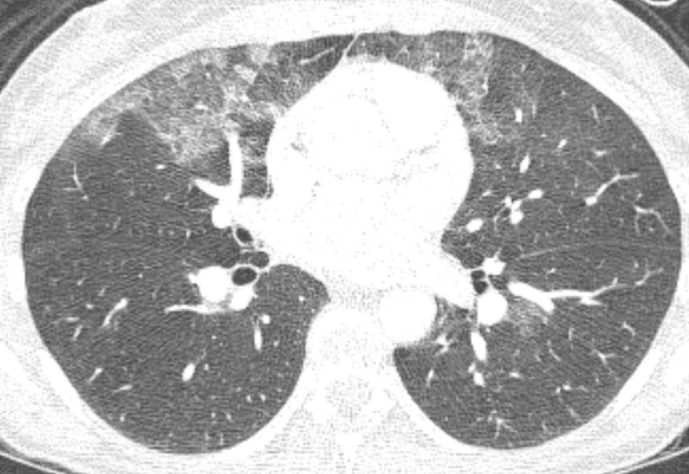

The Starling Equation in the Lung

Source: https://www.anaesthesiamcq.com/FluidBook/fl4_4.php
Lung edema occurs when factors in the Starling Equation promote excessive capillary fluid filtration
We distinguish between hydrostatic and acute lung injury edema 1
Acute Lung Injury - What is injured ?
The alveolar-capillary barrier (electron microscopy)
The consequence is the passage of large molecules and water directly into alveoli.
The pathologic counterpart is Diffuse Alveolar Damage


A Case of Florid Interstitial Edema

Signs of Interstitial Edema
Subpleural interstitial edema
Anatomy of the subpleural interstitium

When two of these sub-visceral pleural compartments are contiguous, as is the case in relation to the interlobar fissures, the accumulating fluid (blue asterisks) suggests “thickening” of the fissures.


Signs of Interstitial Edema
Interlobular septal edema
These represent interlobular septa, the connective-tissue-bearing structures, separating one lobule from its neighbor, distended with fluid and rendered visible.
Traditionally, the horizontally-oriented, short lines above the lateral costophrenic sulci on frontal radiography are termed Kerley B lines; those in proximity to the hila, Kerley A lines; and those imaged en face, perceptually a reticular-type network, Kerley C lines.


Hydrostatic Lung Edema and Thoracic Vessels
The distribution of pulmonary blood flow.
In the physiologic state, reflective of cranial-caudal hydrostatic pressure, the vessels—arteries and veins—in the lower lungs are slightly more distended than those in the upper lungs.
When pulmonary blood flow and volume is increased, as in a left-to-right shunt or hypervolemia, the vessels are distended, and equal in caliber from top to bottom.
In chronic—not acute—pulmonary venous hypertension, the upper zone vessels are more distended. This occurs because of pathologic changes—intimal hypertrophy and hyperplasia—that develop predominantly in these vessels over years. The resultant increase in regional vascular resistance results in the redistribution of blood flow.

Source: Milne, et al. The radiologic distinction of cardiogenic and noncardiogenic edema
Hypervolemia and the Vascular Pedicle
Milne conceptualized and defined the notion of the vascular pedicle on frontal radiography.
The width of the pedicle is measured as the distance between two landmarks: 1) where the lateral margin of the SVC crosses right main bronchus, and 2) the origin of the left subclavian artery. In particular, the SVC is the relevant portion.

Acute Lung Injury Edema
Two key points enable a distinction between hydrostatic and acute lung injury edema.
Typical findings in acute lung injury edema

The distribution of edema fluid (consolidation) is typically diffuse and symmetric.
Acute Lung Injury Edema in Acute Respiratory Distress Syndrome
Criteria for the diagnosis of the clinical entity—ARDS—have been revised several times. This excerpt from UpToDate ® is a useful summary.

It’s common to be asked this question by a clinical colleague: “Are the findings consistent with ARDS”? Of course, that’s the wrong question, which should be: “Are the findings consistent with acute lung injury edema?”
Radiologists do not diagnose ARDS, as such!
CT of Acute Lung Injury Edema

Don’t confuse the posterior lung opacities with anything else other than consolidated and —particularly—atelectatic lung. This is potentially so-called recruitable (by different ventilatory strategies) lung.
The concepts of (dorsal) “sponge” and (ventral) “baby” lungs are evocative. The size of the ventral aerated lung in ARDS (with the patient supine) suggests a “baby” lung— as conceptualized by Gattinoni et. al.

This lovely explanatory graphic (Figure 7; page 255) is from the free book An Approach to Mechanical Heart-Lung Interaction by Jon-Emile S. Kenny available here.
There is relatively more lung volume in the dorsal lungs.
Lung Edema—Variations on the Basic Theme
Here are four cases. Let’s try to determine, in each case, whether hydrostatic or acute lung injury edema is present, and the associated pathophysiology.
There is a history of mitral valve replacement.
A cardiac ultrasound report states: “Thrombus is present on the mechanical mitral valve prosthesis.
There is a marked pressure gradient (mean of 24mm Hg) implying thrombotic occlusion of the prosthesis.”
This young ski tourist in Utah developed acute shortness of breath close to the top of his first run.
He was transported to the E.D.

A patient with a large subdural hematoma in the neurointensive care unit, with new hypoxemia. A morning radiograph is normal.

This tri-athlete complained of unusual, persistent dyspnea just after completing the swimming event. A CT examination was performed a bit later.

Lung Edema in Pulmonary Venous Occlusions
Narrowing and occlusions of veins—large and small—may produce lung edema.
The edema may be diffuse or focal depending on the cause and location.
Here are three illustrative cases.
Diagnosis: Calcified fibrosing mediastinitis
The mediastinal tissue (blue box) encases the right superior pulmonary vein with resultant right upper lobe interstitial edema.
Chronic edema, mostly in the left lower lobe, a consequence of a radiofrequency ablation procedure for atrial fibrillation.

A patient diagnosed with pulmonary arterial hypertension (normal pulmonary artery occlusion pressure).
Findings: Diffuse, bilateral interstitial edema.
Diagnosis: Pulmonary veno-occlusive disease–affecting small pulmonary veins.
Lung Edema from Impaired Clearance of Lung Water. Role of Lymphatics.
- lymph flow easily clears physiologically filtered lung water
- lymphatic obstruction, typically by metastatic tumor–lymphangitic tumor spread–manifests as lung edema
- the edema is typically interstitial, may be focal and asymmetric, and associated with transudative pleural effusions
- lymphangitic tumor spread may be accompanied by other forms of metastases, such as solid nodules
- uncommonly, lymphangitic tumor spread is the first manifestation of cancer
Unexplained, new dyspnea in a healthy female